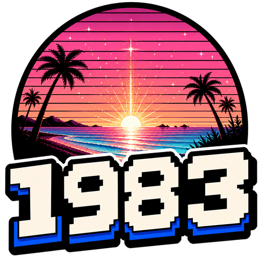

Cartridge I
No cartridge loaded
MSX emulator
Javascript 1983
MSX system
Loading emulator...
Drive A
IDE
Input
Audio

Click display for keyboard
Drop ROM, DSK or CAS media here
MSX monitor
Sharp / Color
Transport
System
Media deck
Virtual transport
Cartridge II
No cartridge loaded
Drive A
No disk loaded
Cassette
No tape loaded
Input channel
Port 1
Joystick: waiting for gamepad...
MSX joystick: idle
Picture
Display control
TEN KEY